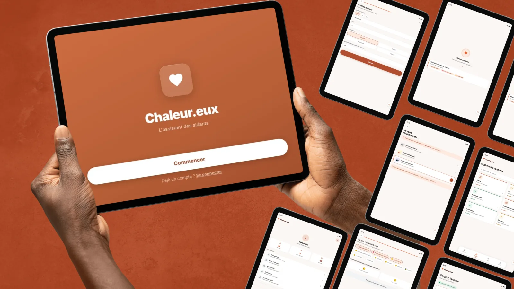
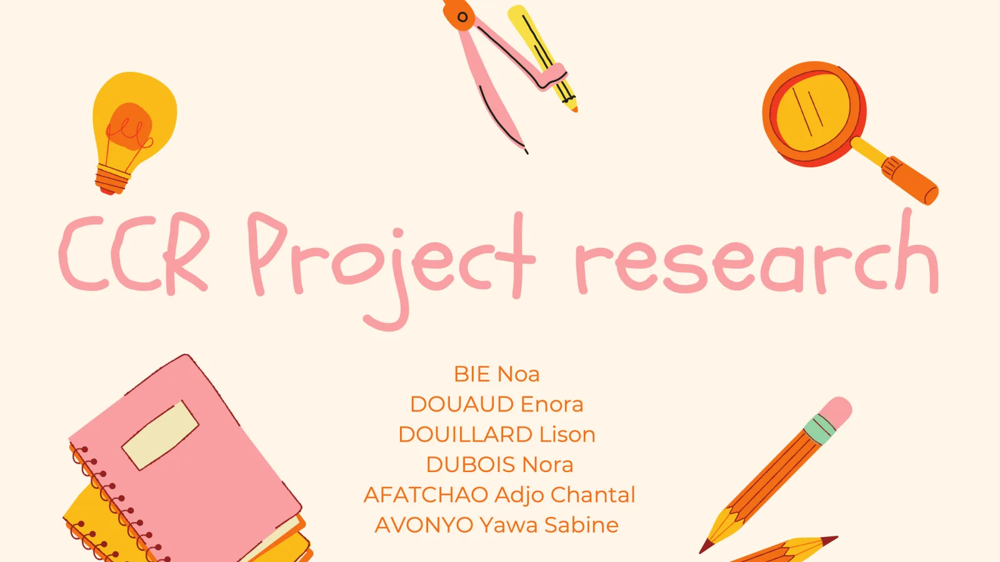
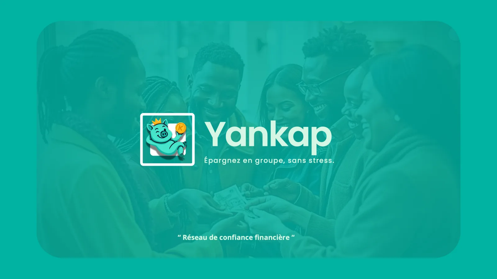
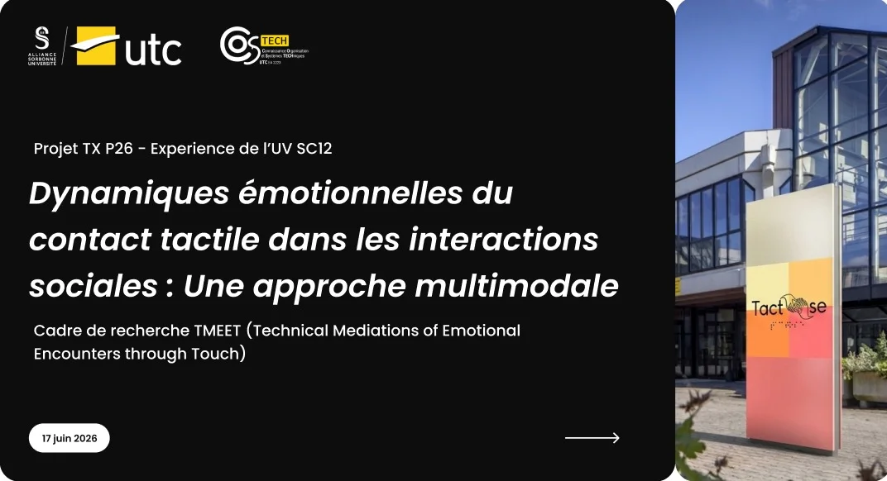

Assistante de recherche
Labo COSTECH, équipe CRED · UTC Compiègne
UX Designer
Formée à la psychologie et aux sciences cognitives, je conçois à partir d'une compréhension profonde des êtres humains de leurs usages, de leurs biais et de leurs liens sociaux.

À propos de moi
Master 1 UX Design à l'UTC Compiègne, après une double licence en psychologie entre Lomé et Nantes. J'étudie les usages réels, les biais cognitifs et les dimensions sociales du design des tontines numériques aux robots sociaux, en passant par la faune d'une gare la nuit.
Don Norman, Le Design du quotidien · Norbert Alter, L'Innovation ordinaire · Baptiste Morizot, Manières d'être vivant · Vinciane Despret, Habiter en oiseau · Joëlle Zask, Zoocities · Elinor Ostrom, Governing the Commons
Mes Projets réalisés
Douze projets entre design d'interface, recherche en laboratoire et psychologie expérimentale. Quatre d'entre eux, en détail.
Garder le professionnel et non l'algorithme au cœur de la décision.
L'assistant des aidants : une application sur tablette pour les aides-soignants qui accompagnent des personnes en perte d'autonomie. Deux modes d'accès, deux logiques de navigation, un protocole de tests utilisateurs complet.


Un jeu de rôle (faut-il faire redoubler un élève ?) en trois phases pour tester une hypothèse : en position de pouvoir, on est plus vulnérable au biais de confirmation. Nantes Université.

Numériser l'épargne solidaire sans détruire ce qui en fait la valeur : Trust Design, transparence sélective, confiance progressive.

Une approche multimodale du toucher dans les interactions sociales : module tactile MIT5, bracelet EmbracePlus et questionnaire SAM. Labo COSTECH, équipe CRED, UTC.
Rapports et livrables disponibles sur demande.
Un robot social né de déchets technologiques, gardien d'une forêt sacrée en 2035. L'imprévisibilité seule génère de la méfiance : un design non punitif qui éduque sans contraindre.
Des pics sonores au-delà de 85 dB vident la gare de toute faune nocturne. Observations de nuit, entretien avec un expert chiroptère, trois concepts de cohabitation.
Un atelier participatif en sept phases, de l'écoute immersive au Crazy 8, conclu par trois concepts ancrés dans les cycles saisonniers des oiseaux.
71 % d'échec sur la prise d'appel. Rapport de tests et proposition de redesign fondée sur les critères ergonomiques.
Évaluation UX d'AllSides pour Courrier International avec 8 participants, et carnet d'études sur l'accès à une information plurielle.
Mémoire collectif sur les dimensions socio-émotionnelles et cognitives, lues avec Tisseron, Merleau-Ponty, Stiegler et Verbeek.
Un podcast narratif où l'auditeur devient acteur de ses choix : un enjeu de santé publique traduit en expérience accessible.
L'accessibilité comme ajustement sociotechnique. Pour le public TSA, la clarté ontologique prime sur le mimétisme : « Je sais que c'est une machine. »
Ma démarche
Terrain, entretiens, mesures in situ. Voir les usages tels qu'ils sont, pas tels qu'on les imagine.
Hypothèses, protocoles expérimentaux, calcul de puissance. Mettre ses intuitions à l'épreuve.
Personas, scénarios, design fiction, prototypes Figma. Y compris pour les non-humains.
Tests utilisateurs, analyse statistique sous Jamovi et JASP. Laisser les données trancher.
Mon parcours
Labo COSTECH, équipe CRED · UTC Compiègne
Humanités et Industries Créatives · UTC Compiègne
Nantes Université, France
Université de Lomé, Togo
Mes compétences
Figma · Canva · CapCut · LimeSurvey · Google Forms · Jamovi · JASP · NoiseCapture · InfraNodus · Gephi · Word · PowerPoint
Français langue maternelle
Anglais B1 (académique)
Débat et réflexion critique · Lecture pluridisciplinaire · Photographie, montage vidéo et analyse sociale par l'image · Écriture
Contactez-moi
Ouverte aux stages UX, aux projets de recherche et aux collaborations à l'intersection de la psychologie, du design et des sciences cognitives.